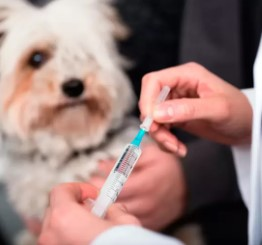
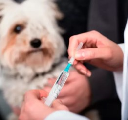

Técnicas de como cuidar a tu mascota

Antes que nada, visita al veterinario
Tener una mascota de manera responsable comienza con visitas regulares al veterinario. Dada su esperanza de vida, tu perrito o mínimo deberían hacerse un chequeo una o dos veces al año. Pero el establecer y mantener la buena salud de tu mascota significa mantenerse al día con las visitas al veterinario a medida que envejecen.
Learm more
Entrenamiento como bienestar
Uno de los aspectos más importantes del cuidado responsable de las mascotas es asegurarse de que tu perro o gato tenga un entrenamiento adecuado. Enseñarles a ir al baño es la prioridad número uno.
Learm more

 
